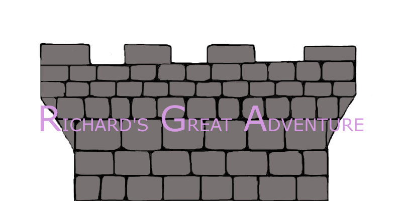

Richard’s Great Adventure Game Design

By Bryan Liao, Calvin Li, Momo Khan
INTRODUCTION
This document describes a game called Richard’s Great Adventure, which is designed to be 2D platformer meant to give players a sense of adventure as they upgrade their character and climb up the tower further. The game will employ sprite-based animation, tiled backgrounds, collision detection, physics, AI, side scrolling and gravity, and game state management.
TECHNOLOGY
Richard’s Great Adventure will be developed for play on browsers using the HTML5 game framework, Phaser. Canvas will be used as the rendering technology. Logic Pro X (and maybe other shit pls find out) will be used for music and sound effect creation.GraphicsGale, GIMP, Piskel and Adobe Photoshop will be used to create the animated sprites. Tiled will be used for creating tilemaps.
BACKSTORY
Richard is a farm boy who aspires to be like the heroes his mom tells him about. Richard is now 18 and ready to challenge the world with only the clothes and sword on his back. He has heard about a great Tower” and the treasure that lies at the top. We follow our character as he begins his ascension.
OBJECTIVE
Richard’s task is to scale each section of the tower while fighting enemies, buying treasure from suspicious shopkeepers and avoiding falling to his death. Richard will be able to collect gold from slain monsters and spend it at shops as he goes, making him stronger, preparing him for what lies ahead.
GAMEPLAY
The game will work like a vertical scroller, with Richard able to move left and right, but with his main objective to be climbing upwards. There will be no scrolling left to right, only up and down.
Richard will have to be careful because there are a slew of different enemies that will try to attack him. Also each section of the tower will have a different mechanic making it harder for Richard to navigate the tower. The first section of the tower will have no unique mechanics to help the player get used to the gameplay. Each section of the tower after the first one is attuned to a different element. The second tower will be ice and all platforms will be slippery, the third section will be wind and have less gravity, and the earth will crumbling platforms that will fall after a certain amount of time when the player lands on it.
At the end of each section, Richard will visit the shopkeeper for potential upgrades to his current equipment. Richard can also manage his inventory at this stage. Getting better equipment will be a key component to beating the game as the difficulty progresses with each section.
CONTROLS
This game will be played using only a keyboard. Once started, use the following:
- LEFT ARROW - Move Left
- RIGHT ARROW - Move Right
- DOWN ARROW - Crouch
- UP ARROW - Look up (Interact)
- SPACE - Jump
- A - Quick Attack
- D - Attack
- ESC - This pauses the game and presents a pop-up window to the player asking them to continue when they are ready.
GRAPHICAL USER INTERFACE
- Splash Screen - The Splash Screen will be the game logo with a loading bar and then a flashy animation when loading is done.
- Main Menu - This screen will let the user choose to play the game, view controls, select levels that have been completed, and a help screen that displays the backstory for the game.
- Levels Selection Screen - This screen will show all 4 sections of the tower in game but will only allow the user to choose ones that have been unlocked or completed. The levels will be presented side by side with a sort of
“screenshot” of the beginning of the tower.
- Controls Screen - This screen displays the controls
- Help Screen - Displays the backstory for the game
- Exit - Close the game
- In-Game Screen - Pauses the game and has the same option as the main menu.
ARTWORK
Richard
- Idle L/R
- Walking L/R
- Jumping L/R
- Taking Damage L/R
- Attacking L/R
- Dying L/R
- Going up staircase
Enemies
- Walking L/R
- Attacking L/R
- Taking Damage L/R
- Dying L/R
- Certain enemies will jump and have jumping left/right animations
Mini-bosses
- Walking L/R
- Attacking L/R
- Taking Damage L/R
- Dying L/R
Ceiling, Floor, and Wall Tiles collidable surfaces. These tiles will have to clearly define where the walkable surface is. We will use different tiles based on the themes of the tower section.
Background Tiles
SOUND EFFECTS
Sound effects will be original or royalty-free. Sounds will be made in response to each of the following events:
- Monsters Dying
- Richard Taking Damage
- Richard Attacking
- Richard Jumping
- Simple dialogue
- Picking up items/gold
- Making shop transactions
MUSIC
The three main game states, Tower, Boss Battle, and Menu/Shopkeep, will have their own background musics.